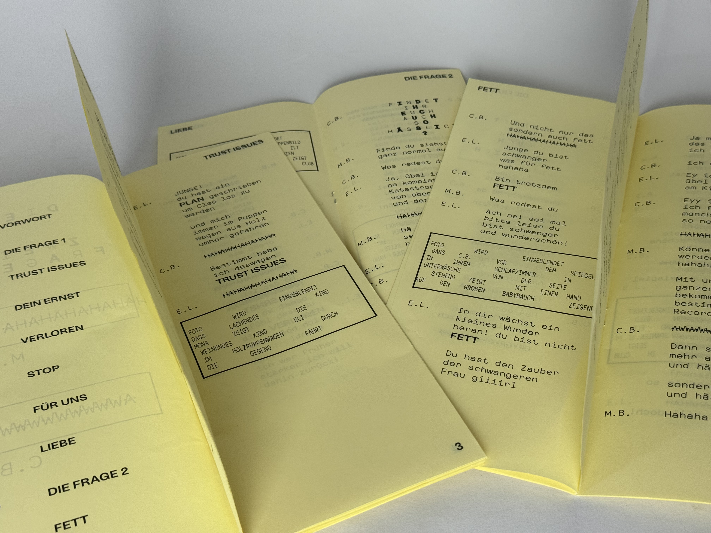
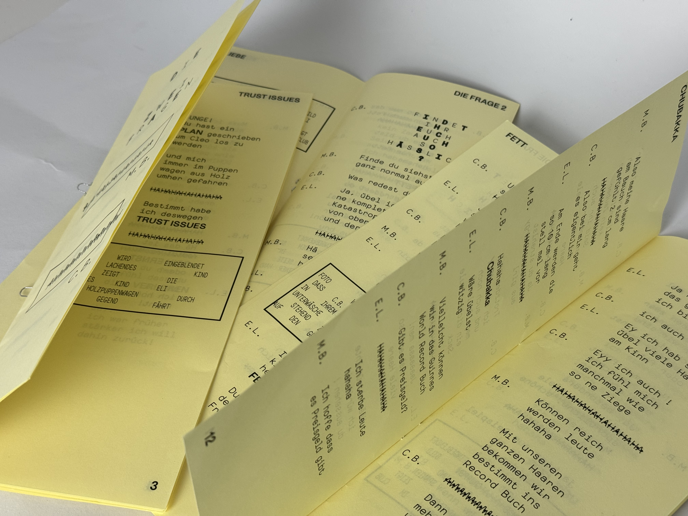
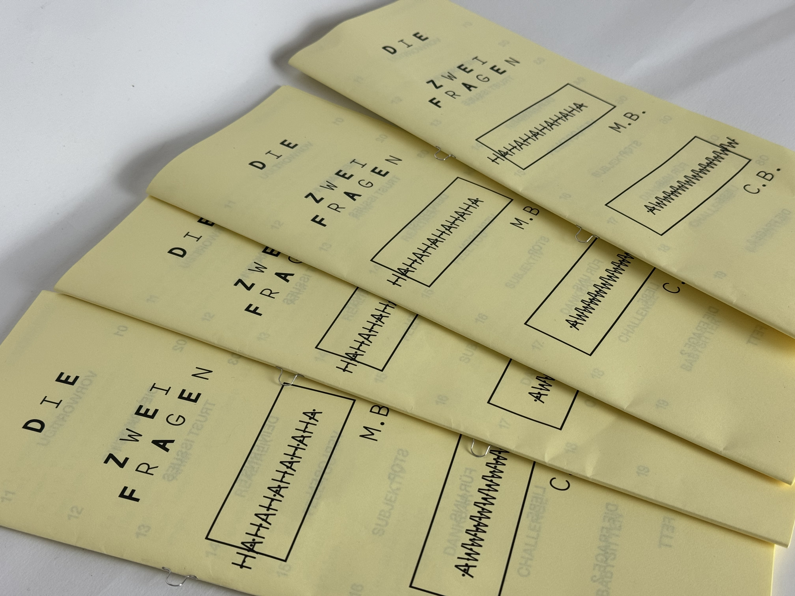

TYPE & PRINT 1
THE 3 QUESTIONS




The project is about a family group chat on WhatsApp, which reflects a blend of comedy and deep, thought-provoking drama stemming from everyday problems and thoughts. 3 questions, 3 cousins, and 1 zine.

